Continent guide · Stamped!
South America
Modernist capitals, colonial churches and concrete landmarks, from Brasília to Cartagena.
- 15Cities
- 153Landmarks
- 5Countries
- 1535Oldest · Cathedral of Lima
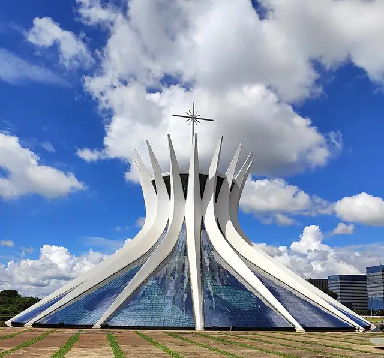
Cathedral of Brasília · Brasília- MASP (São Paulo Museum of Art) · São Paulo
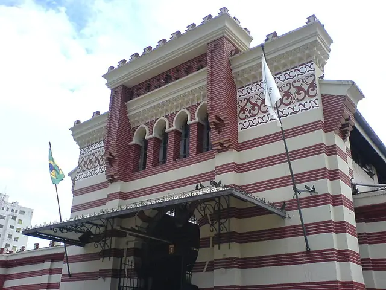
Mercado Municipal · Campinas
Cathedral of Brasília: Photo: Tissiana de A. de Souza, CC BY-SA 4.0, Wikimedia Commons; MASP (São Paulo Museum of Art): Photo: ProtoplasmaKid, CC BY-SA 4.0, Wikimedia Commons; Mercado Municipal: Photo: Paulo Humberto, CC BY-SA 3.0, Wikimedia Commons
15 cities in South America
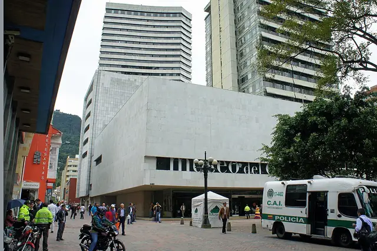
BogotáThe Athens of South AmericaColombia · 5 landmarksPhoto: Mariordo (Mario Roberto Durán Ortiz), CC BY-SA 3.0, Wikimedia Commons- BrasíliaTerra da GaroaBrazil · 15 landmarksPhoto: Tissiana de A. de Souza, CC BY-SA 4.0, Wikimedia Commons
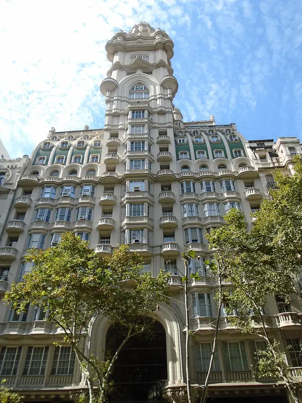
Buenos AiresParis of the SouthArgentina · 6 landmarksPhoto: Eugenio Hansen, OFS, CC BY-SA 4.0, Wikimedia Commons- CampinasTerra da GaroaBrazil · 13 landmarksPhoto: Paulo Humberto, CC BY-SA 3.0, Wikimedia Commons
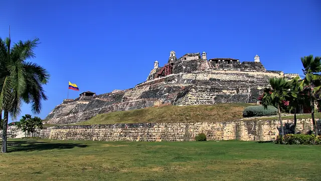
CartagenaThe Heroic CityColombia · 5 landmarksPhoto: Martin St-Amant (S23678), CC BY-SA 3.0, Wikimedia Commons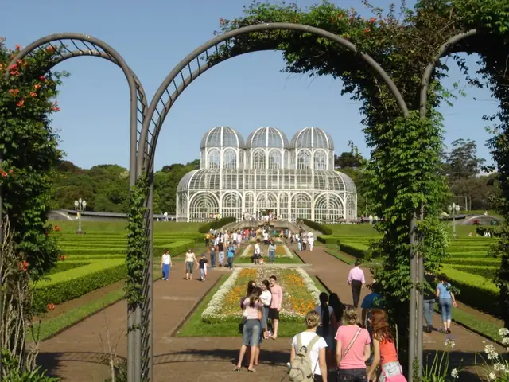
CuritibaTerra da GaroaBrazil · 13 landmarksPhoto: Alan Franco, CC BY 2.0, Wikimedia Commons- FortalezaTerra da GaroaBrazil · 13 landmarksPhoto: Joelkaula, CC BY-SA 4.0, Wikimedia Commons
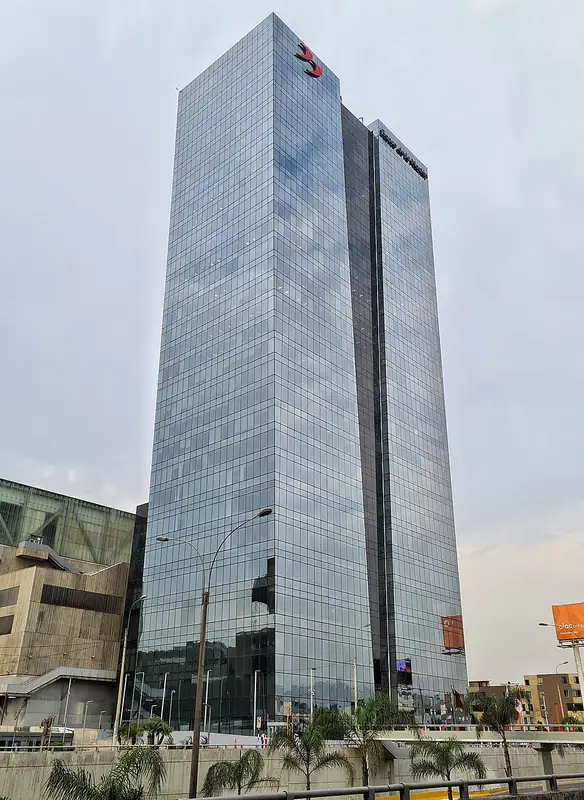
LimaCity of KingsPeru · 6 landmarksPhoto: SamF9, CC BY-SA 4.0, Wikimedia Commons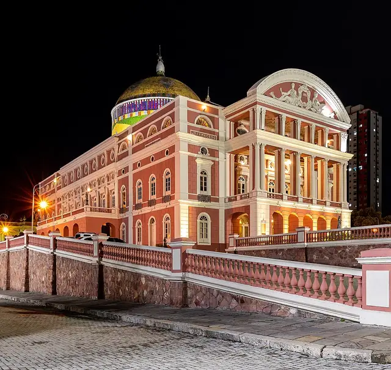
ManausTerra da GaroaBrazil · 13 landmarksPhoto: Susan Valentim, CC BY-SA 4.0, Wikimedia Commons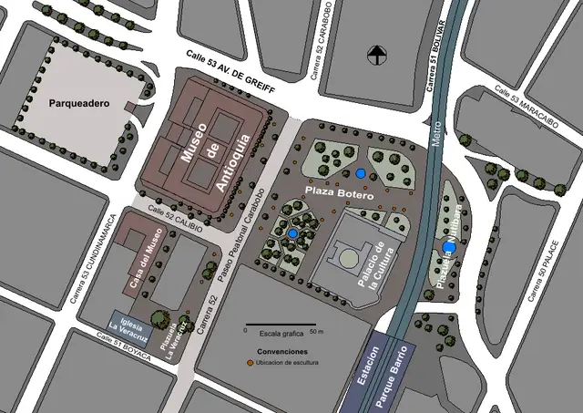
MedellínThe City of Eternal SpringColombia · 5 landmarksPhoto: SajoR, Public domain, Wikimedia Commons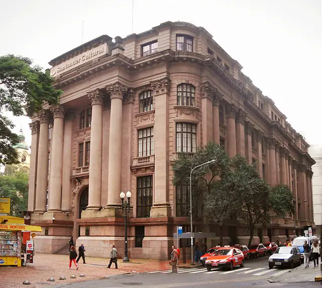
Porto AlegreTerra da GaroaBrazil · 13 landmarksPhoto: Ricardo André Frantz, CC BY-SA 3.0, Wikimedia Commons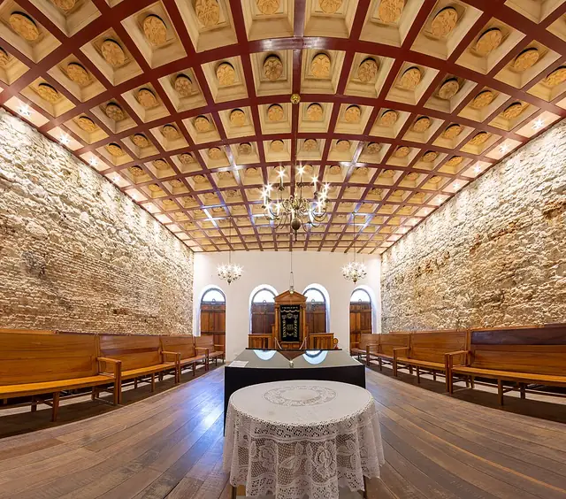
RecifeTerra da GaroaBrazil · 13 landmarksPhoto: Wilfredor, CC0, Wikimedia Commons Rio de JaneiroTerra da GaroaBrazil · 13 landmarksPhoto: Arne Müseler, CC BY-SA 3.0 de, Wikimedia Commons
Rio de JaneiroTerra da GaroaBrazil · 13 landmarksPhoto: Arne Müseler, CC BY-SA 3.0 de, Wikimedia Commons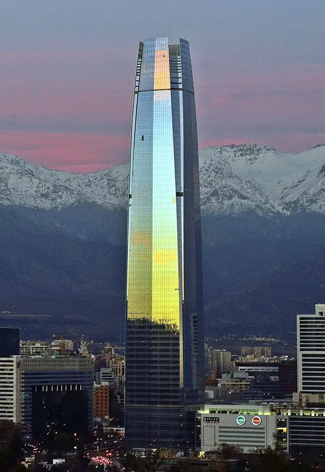
SantiagoCity of the IslandChile · 5 landmarksPhoto: javier, CC BY 2.0, Wikimedia Commons- São PauloTerra da GaroaBrazil · 15 landmarksPhoto: ProtoplasmaKid, CC BY-SA 4.0, Wikimedia Commons
Other continents
Fly through South America in 3D.
All 15 cities, 153 landmarks and a passport stamp for every one you visit. Free on iPhone, iPad, Mac and Apple Vision Pro.
Download on theApp StoreEnjoying the guides? Leave a tip to help keep new cities coming.